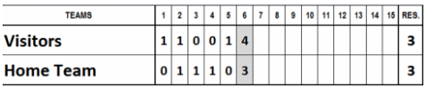

The rule 7.02(a) of the OBR gives some of the possible reasons why a game may be suspended:
A game shall become a suspended game that must be completed at a future date if the game is terminated for any of the following reasons:
A curfew imposed by law;
A time limit permissible under league rules;
Light failure or malfunction of a mechanical field device under control of the home club. (Mechanical field device shall include automatic tarpaulin or water removal equipment.);
Darkness, when a law prevents the lights from being turned on;
Weather, if a regulation game is called while an inning is in progress and before the inning is completed, and the visiting team has scored one or more runs to take the lead, and the home team has not retaken the lead, or
It is a regulation game that is called with the score tied
The game is considered a regulation game in cases 1) and 2) and, if called due to weather where the following conditions given in rule 7.01(c) of the OBR obtain:
If a game is called, it is a regulation game:
If five innings have been completed;
If the home team has scored more runs in four or four and a fraction half-innings than the visiting team has scored in five completed half innings;
If the home team scores one or more runs in its half of the fifth inning to tie the score.
If a game is suspended in the circumstances described in rule 7.02 points 3 and 4, rule 7.02(c) states that the game shall be resumed at the exact point of suspension of the original game.
The completion of a suspended game is a continuation of the original game. The players in the dugouts and the lineups of both teams must be exactly the same as those in effect at the time the game was suspended, and they are subject to the rules governing substitutions. Any player may be replaced by a player who had not taken part in the game before it was suspended.
No player who was replaced before the suspension of the game may return to take part in the game.
Moreover, the note to Rule 7.02(a) states: Weather and similar conditions – Rules 7.02(a)(1) through 7.02(a)(5) - shall take precedence in determining whether a called game shall be a suspended game. If a game is halted by weather, and subsequent light failure or an intervening curfew or time limit prevents its resumption, the game shall not be a suspended game. If a game is halted by light failure, and weather or field conditions prevent its resumption, the game shall not be a suspended game. A game can only be considered a suspended game if stopped for any of the six reasons specified in Rule 7.02(a).
Example 1: The game is called during the second half of the eighth inning, with the score as given below. According to the provisions of the WBSC Baseball Division tournament rules, the game is considered complete and the final score is that which obtained at the end of the seventh inning. The final result is thus 5 to 3 for the home team.
Example 2: The game is called during the second half of the sixth inning, with the score as given below. According to the provisions of the WBSC Baseball Division tournament rules, the game is considered a regulation game, with the score as it stood at the end of the fifth inning. The final result is thus 2 to 1 for the home team.
Example 3: The game is called during the second half of the sixth inning, with the score standing as shown below. According to the provisions of the WBSC Baseball Division tournament rules, the final result is 2 to 1 for the visiting team.

Example 4: The game is called at the end of the first half of the eighth inning, with the score standing as shown below. According to the provisions of the WBSC Baseball Division tournament rules, the game is won by the home team by 5 runs to 3.

Example 5: The game is called at the end of the first half of the seventh inning for darkness. According to the provisions of the WBSC Baseball Division tournament rules, the game will be completed on a date to be decided, and resumed at the exact point at which the original game was suspended.

Example 6: The game is called during the second half of the sixth inning with the score standing as shown below. The final result is 3 all. The game is considered a regulation tied game and shall be replayed only if necessary for the final rankings.

It should be noted that, when the score is disregarded, no individual performances noted in the incomplete inning (whether in attack or defense) are taken into consideration for statistical purposes.